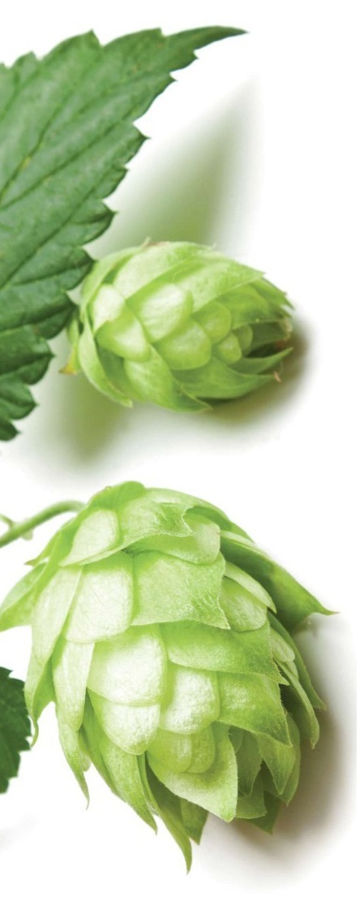
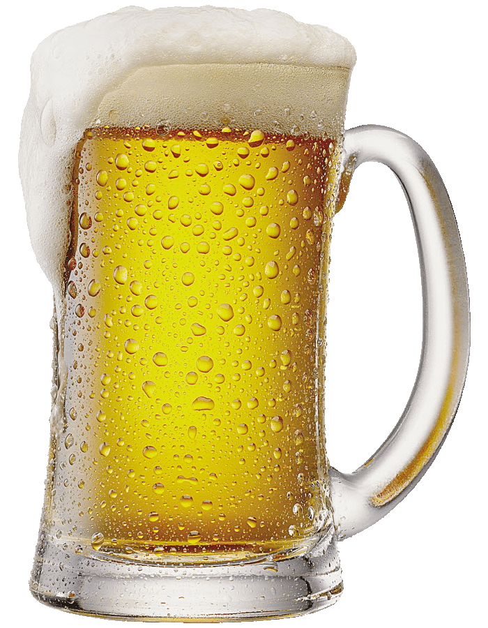

NUESTRA HISTORIA :

En 1997, Javier Espinosa y Mauricio Greco se conocen en primer año de la escuela primaria San Juan Diego, en
la entonces recondita pero hasta hoy pintoresca Santa Rosa de Calamuchita.
Dan inicio a una amistad marcada por los instrumentos musicales, la informatica y la cerveza que late hasta hoy
con aquella intencidad original de la infancia.
Juntos emprenden diferentes proyectos musicales hasta llegar al actual, "4 Quesos", afamada banda de Ska,
Cumbia y Reggae que se conforma como referente de la cultura en Valle de Calamuchia.
Hacia mediados de 2018, con Javier ya consituido como ingeniero Industrial y Mauricio como guitarrista y tecladista de
conservatorio, es que deciden honrar otra de las pasiones que los conceta y fundar "Cerveceria Toska", con base en
"Villa El Corcovado", pequeña localidad de prosapie alemana en el corazon exacto de Calamuchita.
Combinando agua de manantial extraida mediante perforacion con lupulos patagonicos y
granos pampeanos, es que logran fabricar un abanico de cervezas de alta calidad, llegando a ganar el la Fiesta
de la Cerveza de Villa General Belgrano, el segundo premio a la mejor cerveza de la zona.
Bajo la coordinacion tecnica de Javier y de Mauricio como Brew Master,
ofrecen una variedad de experiencias, un degradé de placeres gastronomicos que recorren territorios tan dispares
como la Indian Pale Ale hasta la cerveza con pererina organica serrana.
Este desafío los ha motivado desde nuestra fundación, buscando no sólo elaborar un producto de excelencia para
acercar a la mesa de todos los Calamuchitanos, sino también involucrándonos para que este sea consumido de forma
responsable. Además, buscan colaborar con las comunidades donde se encuentran, comprometidos con su
desarrollo, así como nos ponemos metas ambientales, comprometiéndose a producir cuidando el entorno que nos
rodea.
Desde hace más de 4 años trabajan para hacer un negocio sustentable, y todos los grandes momentos de nuestra
compañía han estado inspirados en este ideal.

A la hora de diseñar una cerveza, los expertos pueden variar los sabores, cuerpo y aromas, y los resultados
dependerán de la combinación de los ingredientes fundamentales: los distintos tipos de malta de cebada, lúpulo y
levadura. El proceso de creación consta siempre de cinco etapas: malteado, producción del mosto, fermentación,
filtración y envasado.
Elaborar una rica cerveza implica combinar la ciencia de su elaboración con el arte de degustarla, servirla y
comprender todo su proceso de composición. Ahí es donde brillan nuestros Maestros Cerveceros, los especialistas
que seleccionan y combinan los mejores elementos para obtener como resultado sabores únicos.